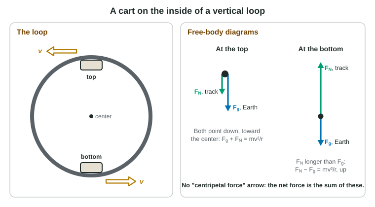

A car rounding a curve at a steady 20 m/s is accelerating. That sounds wrong until you remember that velocity has a direction: the car's direction changes every instant, so its velocity changes, so it accelerates. This topic finds that acceleration, then asks which real forces cause it. The second question is where students lose points: they invent a "centripetal force" or a "centrifugal force" instead of naming the force that is actually there.
Speed, period and frequency
In uniform circular motion an object goes around a circle of radius r at a constant speed. The period T is the time for one trip around, and the frequency f = 1/T is the number of trips per second, in hertz (1 Hz = 1 s⁻¹). In one period the object covers one circumference, so
v = 2πr / T
The velocity at each instant is tangent to the circle: perpendicular to the radius, along the path.
Centripetal acceleration
As the object goes around, its velocity keeps turning toward the center. The change in velocity, and so the acceleration, points toward the center of the circle. Its size is
ac = v² / r (toward the center)
This is the centripetal acceleration ("centripetal" means "center-seeking"). Faster motion or a tighter circle means a larger acceleration. Because v is squared, doubling the speed on the same circle quadruples the acceleration.
If the speed also changes, there is a second part, the tangential acceleration, along the velocity. The total acceleration is the vector sum of the two parts.
What supplies the force?

By the second law, an acceleration toward the center needs a net force toward the center, of size
ΣFtoward center = mv² / r
This is the centripetal net force. It is not a new kind of force. It is the name for the job that one or more real forces are doing. Draw the free-body diagram with only real forces, then add the parts that point toward the center and set the total equal to mv²/r.
| Situation | Real force(s) toward the center |
|---|---|
| Puck on a string on a table | tension |
| Car on a flat curve | static friction from the road |
| Car on a frictionless banked curve | horizontal part of the normal force |
| Car at the crest of a hill | gravity minus the normal force |
| Cart at the top of a vertical loop | gravity plus the normal force (both down) |
| Moon or satellite in a circular orbit | gravity |
There is no outward "centrifugal" force in an inertial frame. When a string holding a whirling puck breaks, the puck does not fly outward along the radius: with no force on it, it moves in a straight line along the tangent, the direction it was already going.
Worked example 1. A 0.30 kg puck goes around a circle of radius 0.60 m on a frictionless table, 1.5 times each second, held by a string. Find the tension.
T = 1/f = 0.67 s, so v = 2πr/T = 2π(0.60 m) ÷ 0.667 s = 5.65 m/s.
The string is the only horizontal force, so FT = mv²/r = (0.30 kg)(5.65 m/s)² ÷ 0.60 m = 16 N.
Vertical circles

On a vertical circle, gravity always points down, so it helps at the top and works against the turn at the bottom. Take "toward the center" as positive.
Worked example 2. A 1200 kg car crosses the crest of a hill (radius 40 m) at 12 m/s. Find the normal force, and the greatest speed at which it stays on the road. Use g = 9.8 m/s².
At the crest the center is below the car. Toward the center (down): mg − FN = mv²/r.
FN = m(g − v²/r) = 1200 kg × (9.8 − 144 ÷ 40) m/s² = 1200 kg × 6.2 m/s² = 7.4 × 10³ N, less than the weight (1.2 × 10⁴ N). Riders feel lighter.
At the greatest speed the road pushes with zero force, so gravity alone supplies the net force: mg = mv²/r, v = √(gr) = √(9.8 × 40) m/s = 20 m/s. The mass cancels.
The same reasoning gives the minimum speed at the top of a loop-the-loop, √(gr): slower than that, gravity alone would pull the cart inward more than the circle needs, and it would fall off the track.
Banked curves and the conical pendulum
On a road banked at angle θ with no friction, the normal force tilts toward the center. Its vertical part balances the weight, FN cos θ = mg, and its horizontal part turns the car, FN sin θ = mv²/r. Dividing gives tan θ = v²/(gr): there is one speed at which no friction is needed. (Curves that need friction too are discussed only in words on the exam.) A conical pendulum, a mass swinging in a horizontal circle on a string, works the same way with tension in place of the normal force.
Circular orbits
For a satellite of mass m in a circular orbit of radius r around a planet of mass M, gravity is the only force, and it supplies the centripetal net force:
GMm / r² = mv² / r, so v = √(GM / r)
The satellite's mass cancels. Substituting v = 2πr/T gives Kepler's third law for circular orbits: T² = (4π²/GM) r³. Moons nine times farther out take 93/2 = 27 times as long to go around. Kepler's other two laws are not on the exam.
Common slips
Drawing a centripetal or centrifugal arrow on the free-body diagram. Forgetting to square v. Using the diameter instead of the radius. Drawing the normal force upward at the top of a loop. Saying a released object flies outward. Treating constant speed on a circle as equilibrium.